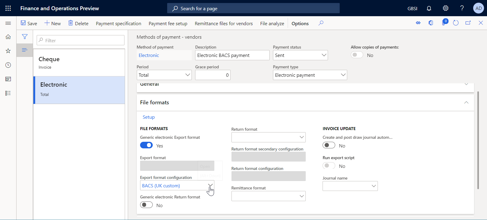

Adjust an ER format to generate a custom electronic document
The procedures in this topic explain how a user in the System Administrator or Electronic Reporting Functional Consultant role can perform these tasks:
- Configure parameters for the Electronic reporting (ER) framework.
- Import ER configurations that are provided by Microsoft and used to generate a payment file while a vendor payment is being processed.
- Create a custom version of a standard ER format configuration that is provided by Microsoft.
- Modify the custom ER format configuration so that it generates payment files that meets the requirements of a specific bank.
- Adopt changes that are made to the standard ER format configuration in the custom ER format configuration.
All the following procedures can be done in the GBSI company. No coding is required.
Import new versions of the standard ER format configurations
Adopt the changes in the new version of an imported format in a custom format
Configure the ER framework
As a user in the Electronic Reporting Functional Consultant role, you must configure the minimal set of ER parameters before you can start to use the ER framework to design a custom version of a standard ER format.
Configure ER parameters
Go to Organization administration > Workspaces > Electronic reporting.
On the Localization configurations page, in the Related links section, select Electronic reporting parameters.
On the Electronic reporting parameters page, on the General tab, set the Enable design mode option to Yes.
On the Attachments tab, set the following parameters:
- In the Configurations field, select the File type for the USMF company.
- In the Job archive, Temporary, Baseline, and Others fields, select the File type.
For more information about ER parameters, see Configure the ER framework (This is an external linThis link was changed due to HTMLfromRepoGenerator).
Activate an ER configuration provider
Every ER configuration that is added is marked as owned by an ER configuration provider. The ER configuration provider that is activated in the Electronic reporting workspace is used for this purpose. Therefore, you must activate an ER configuration provider in the Electronic reporting workspace before you start to add or edit ER configurations.
Note
Only the owner of an ER configuration can edit it. Therefore, before an ER configuration can be edited, the appropriate ER configuration provider must be activated in the Electronic reporting workspace.
Review the list of ER configuration providers
- Go to Organization administration > Workspaces > Electronic reporting.
- On the Localization configurations page, in the Related links section, select Configuration providers.
- On the Configuration provider table page, each provider record has a unique name and URL. Review the contents of this page. If a record for Litware, Inc. (
https://www.litware.com) already exists, skip the next procedure, Add a new ER configuration provider.
Add a new ER configuration provider
- Go to Organization administration > Workspaces > Electronic reporting.
- On the Localization configurations page, in the Related links section, select Configuration providers.
- On the Configuration providers page, select New.
- In the Name field, enter Litware, Inc.
- In the Internet address field, enter
https://www.litware.com. - Select Save.
Activate an ER configuration provider
- Go to Organization administration > Workspaces > Electronic reporting.
- On the Localization configurations page, in the Configuration providers section, select the Litware, Inc. tile, and then select Set active.
For more information about ER configuration providers, see Create configuration providers and mark them as active.
Import the standard ER format configurations
Import the standard ER configurations
To add the standard ER configurations to your current instance of Microsoft Dynamics 365 Finance, you must import them from the ER repository that was configured for that instance.
- Go to Organization administration > Workspaces > Electronic reporting.
- On the Localization configurations page, in the Configuration providers section, select the Microsoft tile, and then select Repositories to view the list of repositories for the Microsoft provider.
- On the Configuration repositories page, select the repository of the Global type, and then select Open. If you're prompted for authorization to connect to Regulatory Configuration Service, follow the authorization instructions.
- On the Configuration repository page, in the configuration tree in the left pane, select the BACS (UK) format configuration.
- On the Versions FastTab, select version 1.1 of the selected ER format configuration.
- Select Import to download the selected version from the Global repository to the current Finance instance.

Tip
If you have trouble accessing the Global repository, you can download configurations from Microsoft Dynamics Lifecycle Services (LCS) instead.
Review the imported ER configurations
Go to Organization administration > Workspaces > Electronic reporting.
On the Localization configurations page, in the Configurations section, select the Reporting configurations tile.
On the Configurations page, in the configuration tree in the left pane, expand Payment model.
Notice that, in addition to the selected BACS (UK) ER format, other required ER configurations were imported. Make sure that the following ER configurations are available in the configuration tree:
- Payment model – This configuration contains the data model ER component that represents the data structure of the payment business domain.
- Payment model mapping 1611 – This configuration contains the model mapping ER component that describes how the data model is filled in with application data at runtime.
- BACS (UK) – This configuration contains the format and format mapping ER components. The format component specifies the report layout. The format mapping component contains the model data source and specifies how the report layout is filled in by using this data source at runtime.

Prepare a vendor payment for processing
Add bank information for a vendor account
You must add bank information for a vendor account that will be referred to later in a registered payment.
Go to Accounts payable > Vendors > All vendors.
On the All vendors page, select the GB_SI_000001 vendor account, and then, on the Action Pane, on the Vendor tab, in the Set up group, select Bank accounts.
On the Vendor bank accounts page, select New, and then enter the following information:
- In the Bank account field, enter GBP OPER.
- In the Bank groups field, select BankGBP.
- In the Bank account number field, enter 202015.
- In the SWIFT code field, enter CHASDEFXXXX.
- In the IBAN field, enter GB33BUKB20201555555555.
- In the Routing number field, keep the default value, 123456.

Select Save.
Close the page.
On the All vendors page, open the GB_SI_000001 vendor account.
On the vendor details page, select Edit to make the page editable, if required.
On the Payment FastTab, in the Bank account field, select GBP OPER.

Select Save.
Close the page.
Enter a vendor payment
You must enter a new vendor payment by using a payment proposal.
Go to Accounts payable > Payments > Vendor payment journal.
On the Vendor payment journal page, select New.
In the Name field, select VendPay.
Select Lines.
Select Payment proposal > Create payment proposal.
In the Vendor payment proposal dialog box, configure conditions to filter for records for the GB_SI_000001 vendor account only, and then select OK.
Select the line for the 00000007_Inv invoice, and then select Create payment.

Verify that the payment that is entered is configured to use the Electronic method of payment.
Process a vendor payment by using the standard ER format
Set up the electronic payment method
You must configure the electronic method of payment so that it uses the imported ER format configuration.
Go to Accounts payable > Payment setup > Methods of payment.
On the Methods of payment - vendors page, select the Electronic method of payment in the left pane.
Select Edit.
On the File formats FastTab, set the General electronic Export format option to Yes.
In the Export format configuration field, select the BACS (UK) format configuration.

Select Save.
Process a vendor payment
Go to Accounts payable > Payments > Vendor payment journal.
On the Vendor payment journal page, select the payment journal that you added earlier, and then select Lines.
On the Vendor payments page, select Generate payments.
In the Generate payments dialog box, enter the following information:
- In the Method of payment field, select Electronic.
- In the Bank account field, select GBSI OPER.
Select OK.
In the Electronic report parameters dialog box, set the Print control report option to Yes, and then select OK.

Note
In addition to the payment file, you can now generate the control report.
Download the zip file, and then extract the following files from it:

Customize the standard ER format
For the example that is shown in this section, you want to use the ER configurations that are provided by Microsoft to generate vendor payment files in BACS format, but you must add a customization to support the requirements of a specific bank. You also want to be able to upgrade your custom format when new versions of ER configurations become available. However, you want to be able to do the upgrade at the lowest cost.
In this case, as the representative of Litware, Inc., you must create (derive) a new ER format configuration by using the BACS (UK) Microsoft-provided configuration as a base.
Create a custom format
Go to Organization administration > Electronic reporting > Configurations.
On the Configurations page, in the configuration tree in the left pane, expand Payment model, and then select BACS (UK). Litware, Inc. will use version 1.1 of this ER format configuration as the base for the custom version.
Select Create configuration to open the drop-down dialog box. You can use this dialog box to create a new configuration for a custom payment format.
In the New field group, select the Derive from Name: BACS (UK), Microsoft option.
In the Name field, enter BACS (UK custom).

Select Create configuration.
Version 1.1.1 of the BACS (UK custom) ER format configuration is created. This version has a status of Draft and can be edited. The current content of your custom ER format matches the content of the format that is provided by Microsoft.
Edit a custom format
You must configure your custom format so that it meets bank-specific requirements. For example, a bank might require that payment files that are generated include the Society for Worldwide Interbank Financial Telecommunication (SWIFT) code of a bank that is assigned the agent role in the processed vendor payment. SWIFT codes are international bank codes that identify specific banks worldwide. They are also known as Bank Identifier Codes (BICs). The SWIFT code must be 11 characters long, and it must be entered at the beginning of every payment line in a generated payment file.
Go to Organization administration > Electronic reporting > Configurations.
On the Configurations page, in the configuration tree in the left pane, expand Payment model, and then select BACS (UK custom).
On the Versions FastTab, select version 1.1.1 of the selected configuration.
Select Designer.
On the Format designer page, select Show details to view more information about the format elements.
Expand and review the following elements:
- The BACSReportsFolder element of the Folder type. This element is used to generate output in ZIP format.
- The file element of the File type. This element is used to generate a payment file in TXT format.
- The transactions element of the Sequence type. This element is used to generate a single payment line in a payment file.
- The transaction element of the Sequence type. This element is used to generate individual fields of a single payment line.
Select the transaction element.

Select Add, and then select the Text\String type of the format element that you're adding:
- In the Name field, enter vendBankSWIFT.
- In the Minimum length field, enter 11.
- In the Maximum length field, enter 11.
- Select OK.
Note
The vendBankSWIFT element will be used to enter the SWIFT code of a vendor bank in generated files.
In the format structure tree, select vendBankSWIFT.
Select Move up to move the selected format element up one level. Repeat this step until the vendBankSWIFT element is the first element under the parent transaction element.

While the vendBankSWIFT is still selected in the format structure tree, select the Mapping tab, and then expand the model data source.
Expand model.Payment > model.Payment.CreditorAgent, and select the model.Payment.CreditorAgent.BICFI data source field. This data source field exposes the SWIFT code of a vendor bank that is assigned the agent role in the processed vendor payment.
Select Bind. The vendBankSWIFT format element is now bound with the model.Payment.CreditorAgent.BICFI data source field, so that SWIFT codes will be entered in generated payment files.
Select Save.
Close the designer page.
Mark a custom format as runnable
Now that the first version of your custom format has been created and has a status of Draft, you can run it for testing purposes. To run the report, you must process a vendor payment by using the payment method that refers to your custom ER format. By default, when you call an ER format from the application, only versions that have a status of Completed or Shared are considered. This behavior helps prevent ER formats that have unfinished designs from being used. However, for your test runs, you can force the application to use the version of your ER format that has a status of Draft. In this way, you can adjust the current format version if any modifications are required. For more information, see Applicability.
To use the draft version of an ER format, you must explicitly mark the ER format.
Go to Organization administration > Electronic reporting > Configurations.
On the Configurations page, on the Action Pane, on the Configurations tab, in the Advanced settings group, select User parameters.
In the User parameters dialog box, set the Run settings option to Yes, and then select OK.
Select Edit to make the current page editable, as required.
In the configuration tree in the left pane, select BACS (UK custom).
Set the Run Draft option to Yes.

Process a vendor payment by using the custom ER format
Set up the electronic payment method
You must configure the electronic method of payment so that your custom ER format is used to process vendor payments.
Go to Accounts payable > Payment setup > Methods of payment.
On the Methods of payment - vendors page, select the Electronic method of payment in the left pane.
Select Edit.
On the File format FastTab, set the General electronic export format option to Yes.
In the Export format configuration field, select the BACS (UK custom) format configuration.

Select Save.
Process a vendor payment
Go to Accounts payable > Payments > Vendor payment journal.
On the Vendor payment journal page, select the payment journal that you created earlier.
Select Lines.
On the Vendor payments page, above the grid, select Payment status > None.
Select Generate payment.
In the Generate payments dialog box, enter the following information:
- In the Method of payment field, select Electronic.
- In the Bank account field, select GBSI OPER.
Select OK.
In the Electronic report parameters dialog box, set the Print control report option to Yes, and then select OK.
Note
In addition to the payment file, you can generate only the control report.
Download the zip file, and then extract the following files from it:
Import new versions of the standard ER format configurations
For the example that is shown in this section, you receive a notification about Knowledge Base article KB3763330. This notification informs you about the new version of the BACS (UK) ER format that has been published by Microsoft. In addition to the control report, this new version lets users generate the payment advice report and the attending note report while a vendor payment is being processed. You want to start to use that functionality.
Import new versions of the standard ER configurations
To add new versions of the ER configurations to the current Finance instance, you must import them from the ER repository that you've configured.
- Go to Organization administration > Workspaces > Electronic reporting.
- On the Localization configurations page, in the Configuration providers section, select the Microsoft tile, and then select Repositories to view the list of repositories for the Microsoft provider.
- On the Configuration repositories page, select the repository of the Global type, and then select Open. If you're prompted for authorization to connect to Regulatory Configuration Service, follow the authorization instructions.
- On the Configuration repository page, in the configuration tree in the left pane, select the BACS (UK) format configuration.
- On the Versions FastTab, select version 3.3 of the selected ER format configuration.
- Select Import to download the selected version from the Global repository to the current Finance instance.

Tip
If you have trouble accessing the Global repository, you can download configurations from LCS instead.
Review the imported ER format configurations
Go to Organization administration > Workspaces > Electronic reporting.
On the Localization configurations page, in the Configurations section, select the Reporting configurations tile.
On the Configurations page, in the configuration tree in the left pane, expand Payment model, and then select BACS (UK).
On the Versions FastTab, select version 3.3.
Select Designer.
On the Format designer page, expand the BACSReportsFolder format element.
Notice that version 3.3 contains the PaymentAdviceReport format element that is used to generate a payment advice report when a vendor payment is processed.

Close the designer page.
Adopt the changes in the new version of an imported format in a custom format
Complete the current draft version of a custom format
If you want to keep the current state of your custom format, complete the draft version 1.1.1 by changing its status from Draft to Completed.
- Go to Organization administration > Workspaces > Electronic reporting.
- On the Localization configurations page, in the Configurations section, select the Reporting configurations tile.
- On the Configurations page, in the configuration tree in the left pane, expand Payment model, expand BACS (UK), and then select BACS (UK custom).
- On the Versions FastTab, select Change status > Complete, and then select OK.
The status of version 1.1.1 is changed from Draft to Completed, and the version becomes read-only. A new editable version, 1.1.2, has been added and has a status of Draft. You can use this version to make further changes in your custom ER format.
Rebase a custom format to a new base version
To start to use the new functionality of version 3.3 of the BACS (UK) format in your customization, you must change the base configuration version for the custom configuration, BACS (UK custom). This process is known as rebasing. Instead of version 1.1 of BACS (UK), use version 3.3.
Go to Organization administration > Electronic reporting > Configurations.
On the Configurations page, in the configuration tree in the left pane, expand Payment model, and then select BACS (UK custom).
On the Versions FastTab, select version 1.1.2, and then select Rebase.
In the Rebase dialog box, in the Target version field, select version 3.3 of the base configuration to apply it as the new base and use it to update the configuration.

Select OK.
Notice that the number of the draft version has been changed from 1.1.2 to 3.3.2 to reflect the change in the base version.
When the custom version and a new base version are merged, some conflicts might be discovered because of format changes that can't be merged automatically.

If conflicts are discovered, they must be manually resolved in the format designer.
On the Versions FastTab, select version 3.3.2.
Select Designer.
On the Format designer page, on the Details FastTab, select a rebase conflict record, and then select Apply base value.

Select Save.
The rebase conflict record should no longer appear on the Details FastTab.

Note
You resolved the conflict by confirming that version 3 of the base model must be used in this ER format.
Expand BACSReportsFolder > file > transactions > transaction.
On the Mapping tab, notice that version 3.3.2 of your custom ER format contains both your customization (the vendBankSWIFT format element and its binding) and the new functionality of version 3.3 of the base ER format that was provided by Microsoft (the PaymentAdviceReport format element together with its nested elements and configured bindings). In just a few mouse clicks, you adopted the modifications of a new base version by merging them with your customization.

Close the designer page.
Note
The rebase action is reversible. To cancel this rebase, select version 1.1.1 of the BACS (UK custom) format on the Versions FastTab, and then select Get this version. Version 3.3.2 will then be renumbered 1.1.2, and the content of draft version 1.1.2 will match the content of version 1.1.1.
Process a vendor payment by using a rebased ER format
Go to Accounts payable > Payments > Vendor payment journal.
On the Vendor payment journal page, select the payment journal that you created earlier.
Select Lines.
On the Vendor payments page, above the grid, select Payment status > None.
Select Generate payment.
In the Generate payments dialog box, enter the following information:
- In the Method of payment field, select Electronic.
- In the Bank account field, select GBSI OPER.
Select OK.
In the Electronic report parameters dialog box, enter the following information:
- Set the Print control report option to Yes.
- Set the Print payment advice option to Yes.

Note
In addition to the payment file, you can now generate both the control report and the payment advice report.
Select OK.
Download the zip file, and then extract the following files from it:
The control report in Excel format
The payment advice report in Excel format

The payment file in TXT format
Notice that the payment line in the generated file starts with the SWIFT code that was entered for the bank account of a vendor whose payment has been processed.